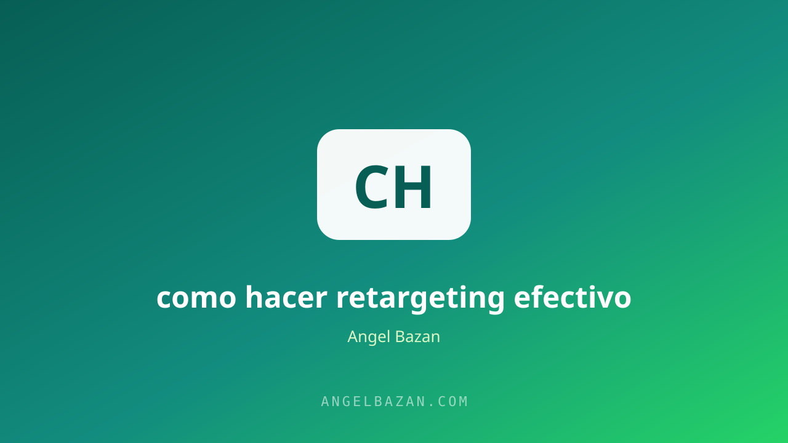

Retargeting efectivo: cómo vender sin molestar a tu audiencia
Mostrar anuncios a quienes ya te conocen es la publicidad más rentable que existe. El reto no es aparecer: es aparecer bien, en el momento justo.
En este artículo
El retargeting es la forma más rentable de publicidad digital: muestra tu anuncio a personas que ya conocen tu marca, en lugar de a desconocidos. Esa ventaja tiene una trampa. Hecho mal, molesta y quema tu marca; hecho bien, convierte y recupera ventas que parecían perdidas. La diferencia está en el respeto por la audiencia, en los segmentos y en la estructura del sistema, no en gastar más presupuesto.
Esta guía cubre los segmentos, las creatividades, la frecuencia y la medición para que tu retargeting venda sin cansar a nadie. El objetivo no es perseguir personas: es aparecer en el momento justo, con el mensaje correcto, y mover la conversación al canal donde se cierra. En los negocios que funcionan, ese canal es WhatsApp.

Qué es el retargeting y por qué funciona
El retargeting rastrea a quienes interactuaron con tu marca: visitaron tu página, vieron un video, abrieron un mensaje o dejaron un carrito. A esa audiencia caliente le muestras anuncios específicos. Funciona porque la intención ya existe: no necesitas convencer desde cero, solo acompañar la decisión. En la práctica es la estrategia que más rápido mejora el retorno, porque habla con personas que ya dieron el primer paso. La lógica completa, aplicada a WhatsApp, está en retargeting en Meta Ads para WhatsApp.
Segmenta, no dispares a todos
- Visitantes de la landing: audiencia caliente que ya vio tu oferta.
- Quienes vieron el video: interesados que necesitan la prueba.
- Quienes iniciaron conversación: listos, solo necesitan seguimiento.
- Quienes compraron: base para upsell y cross-sell.
Cada segmento merece un mensaje distinto. Quien vio el video necesita credibilidad; quien abandonó la página necesita la objeción resuelta; quien compró merece otra oportunidad. Segmentar mal es la causa número uno del "retargeting que molesta": el mismo anuncio para todos.
Creatividades que no parecen anuncios
El retargeting funciona mejor cuando el anuncio parece recomendación o contenido, no publicidad: testimonio real, comparación, garantía, caso de éxito. El texto debe recordar el beneficio y nombrar el siguiente paso. Los tipos de anuncios en Facebook Ads te dan el mapa de formatos disponibles, y el copy decide si el clic vale la pena. Para audiencias calientes, la especificidad vence a la creatividad: di qué reciben y cuándo.
La frecuencia correcta
Ver el mismo anuncio tres veces refuerza; verlo veinte veces enfada. Controla la frecuencia: entre dos y cuatro impresiones por persona a la semana es un rango sano en la mayoría de los negocios. Cuando la frecuencia sube y la respuesta baja, cambia la creatividad o pausa el conjunto. Respetar la atención no es un lujo: es la regla del retargeting moderno, igual que el CTR se cuida para que el algoritmo te premie.
Lleva el clic a WhatsApp
El retargeting que lleva a una landing sigue funcionando, pero el que lleva a WhatsApp convierte más: el clic abre una conversación, no una página que se abandona. El anuncio dice "te escribo por WhatsApp y te paso el detalle", y la conversación resuelve en vivo lo que la página no pudo. El flujo completo se arma con el embudo de WhatsApp desde cero, y el seguimiento automático hace el resto del trabajo mientras tú duermes.
Mide lo que importa
Métricas clave: CTR, costo por lead, ROAS vs ROI y costo por conversación iniciada. Si el retargeting llega barato pero no convierte, el problema está en la oferta o en la página, no en los anuncios. La herramienta de estructuración de campañas te ayuda a ordenar el sistema, y la calculadora de CPL y ROAS decide cuándo escalar con datos en vez de intuición.
Errores de retargeting
- Perseguir con el mismo anuncio hasta la fatiga de audiencia.
- Retargetear a todos por igual sin separar por intención.
- Frecuencia descontrolada que convierte clientes en bloqueadores.
- Medir solo el clic y no la venta o la conversación iniciada.
Corregir estos cuatro errores ya cambia el resultado. El retargeting es una máquina fina: bien ajustada, es la pieza que sostiene el ROAS de cualquier cuenta. Combinarlo con una buena base de Meta Ads que vendan más y con la escalada de tu cuenta convierte el sistema completo en un motor de ventas predecible.
Preguntas frecuentes
¿Cuánto tiempo debe durar la audiencia? Depende del ciclo de compra: de 14 a 30 días para productos digitales de impulso, más para servicios de mayor consideración. Después de ese plazo, el recuerdo se apaga y el interés se redefine.
¿Qué presupuesto necesito para retargeting? Menos del que imaginas: se invierte en audiencias pequeñas y calientes, así que el costo por resultado suele ser menor que en campañas frías. Un 20-30% del presupuesto total es un punto de partida sano.
¿El retargeting funciona para vender por WhatsApp? Es el que mejor funciona: el clic abre una conversación real y el seguimiento por mensaje multiplica la conversión frente a una landing fría. El sistema de retargeting a WhatsApp lo explica paso a paso.

Angel Bazán
Especialista en funnels, Meta Ads y WhatsApp + IA. Ayudo a negocios a vender más combinando tráfico pagado con conversaciones automatizadas.
Conoce más sobre mí →Aprende a crear y vender productos digitales con Meta Ads, WhatsApp e IA
Clases en vivo, estrategias y recursos para construir tu sistema desde cero. 🚀
Únete gratis al grupo